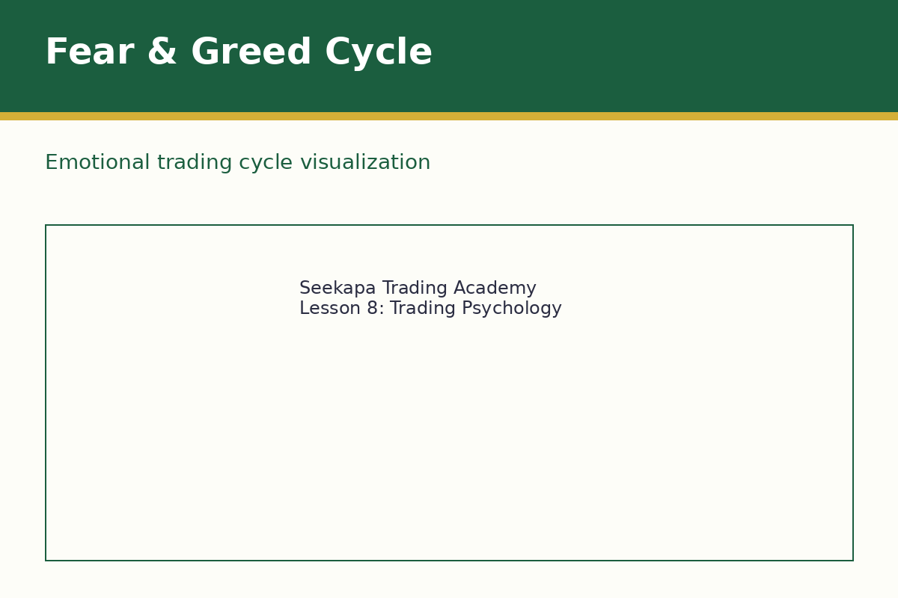
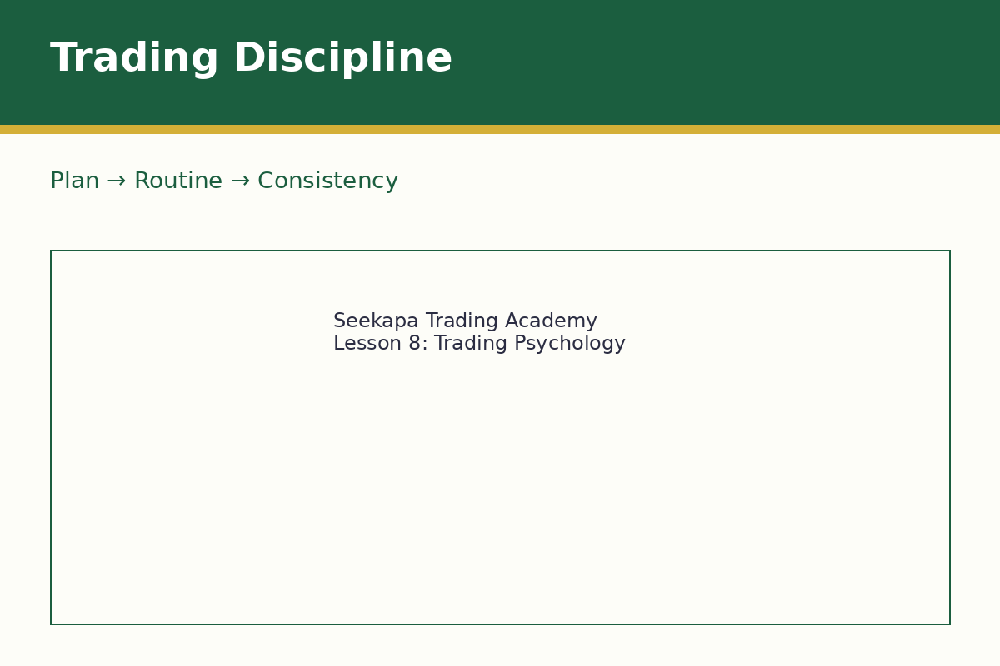
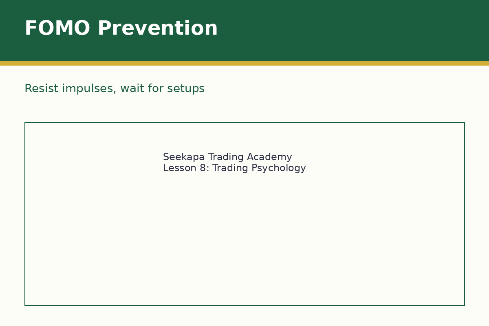
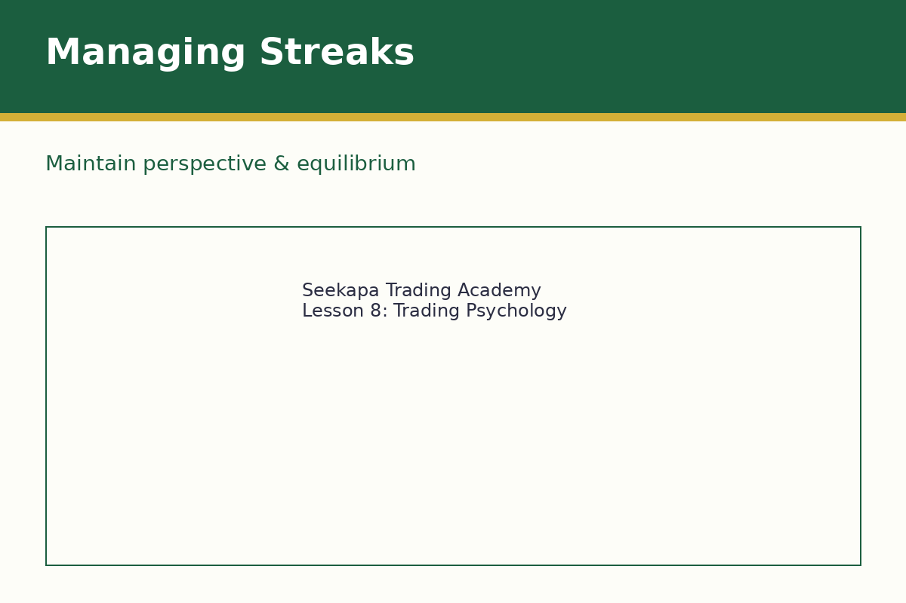

Master your mind to achieve consistent trading success
Lección 8
Psicología del Trading y Mentalidad
Domina tu mente para lograr éxito consistente en el trading
Lição 8
Psicologia do Trading e Mentalidade
Domine sua mente para alcançar sucesso consistente no trading
فيديو الدرس قيد الإعداد
المدة: دقيقتان | الجودة: 1080p
أهداف التعلم
فهم التحديات النفسية للتداول
تعلم إدارة المشاعر مثل الخوف والطمع
تطوير الانضباط والصبر في قرارات التداول
إنشاء أطر عقلية لاتخاذ قرارات متسقة تحت الضغط
Learning Objectives
Understand the psychological challenges of trading
Learn to manage emotions like fear and greed
Develop discipline and patience in trading decisions
Create mental frameworks for consistent decision-making under pressure
Objetivos de Aprendizaje
Comprender los desafíos psicológicos del trading
Aprender a gestionar emociones como el miedo y la codicia
Desarrollar disciplina y paciencia en las decisiones de trading
Crear marcos mentales para tomar decisiones consistentes bajo presión
Objetivos de Aprendizagem
Entender os desafios psicológicos do trading
Aprender a gerenciar emoções como medo e ganância
Desenvolver disciplina e paciência nas decisões de trading
Criar marcos mentais para tomada de decisões consistentes sob pressão
فهم مشاعر التداول
الخوف والطمع يمثلان المشاعر الأساسية التي تدفع سلوك السوق والقرارات الفردية. يظهر الخوف كخوف من خسارة المال أو فقدان الفرص أو الخطأ أو حتى الخوف من النجاح. الخوف من خسارة المال يجعل المتداولين يغلقون الصفقات الرابحة مبكراً جداً أو يتجنبون التداول تماماً. الخوف من فقدان الفرصة (FOMO) يؤدي إلى مطاردة الأسعار والدخول عند مستويات سيئة. يظهر الطمع كرغبة في أرباح أكبر، مما يقود المتداولين إلى الاحتفاظ بالرابحين طويلاً جداً أو المخاطرة بكثير. الابتهاج من الصفقات الرابحة يمكن أن يكون خطيراً مثل الخوف من الخسائر، وغالباً يؤدي إلى الثقة الزائدة وزيادة المخاطر.

Understanding Trading Emotions
Fear and greed represent the two primary emotions that drive market behavior and individual decisions. Fear manifests as fear of losing money, missing opportunities, being wrong, or even fear of success. Fear of losing money causes traders to exit profitable trades too early or avoid trades altogether. Fear of missing out (FOMO) leads to chasing prices and entering at poor levels. Greed manifests as desire for larger profits, leading traders to hold winners too long or risk too much. The euphoria from winning trades can be as dangerous as the fear from losses, often leading to overconfidence and increased risk-taking.
Comprendiendo las Emociones en el Trading
El miedo y la codicia representan las dos emociones primarias que impulsan el comportamiento del mercado y las decisiones individuales. El miedo se manifiesta como miedo a perder dinero, perder oportunidades, estar equivocado o incluso miedo al éxito. El miedo a perder dinero causa que los traders cierren operaciones rentables demasiado pronto o eviten operar completamente. El miedo a perderse algo (FOMO) conduce a perseguir precios y entrar en niveles pobres. La codicia se manifiesta como deseo de ganancias mayores, llevando a los traders a mantener ganadores demasiado tiempo o arriesgar demasiado. La euforia de operaciones ganadoras puede ser tan peligrosa como el miedo a las pérdidas, a menudo conduciendo a la sobreconfianza y al aumento del riesgo.
Compreendendo as Emoções no Trading
O medo e a ganância representam as duas emoções primárias que impulsionam o comportamento do mercado e as decisões individuais. O medo se manifesta como medo de perder dinheiro, perder oportunidades, estar errado ou mesmo medo do sucesso. O medo de perder dinheiro faz com que os traders fechem operações lucrativas muito cedo ou evitem negociar completamente. O medo de perder algo (FOMO) leva a perseguir preços e entrar em níveis pobres. A ganância se manifesta como desejo de maiores lucros, levando os traders a manter vencedores muito tempo ou arriscar demais. A euforia das operações vencedoras pode ser tão perigosa quanto o medo das perdas, frequentemente levando ao excesso de confiança e aumento do risco.
تطوير الانضباط في التداول
الانضباط في التداول يعني اتباع خطتك المحددة مسبقاً بغض النظر عن المشاعر أو ظروف السوق. يتضمن هذا الالتزام بقواعس تحديد حجم المركز واحترام أوامر وقف الخسائر والحفاظ على عمليات تحليل متسقة. إنشاء واتباع خطة تداول توفر إرشادات واضحة محددة مقدماً، مما يقلل من الاتخاذ العاطفي للقرارات أثناء الظروف المجهدة. الروتين والتسق يساعدان في بناء الانضباط بمرور الوقت من خلال أنماط مماثلة للتحليل والإعداد والتنفيذ. حفظ السجلات وتدوين الصفقات توفر المساءلة وفرص التعلم من خلال توثيق الصفقات والمنطق والحالات العاطفية.

Developing Trading Discipline
Discipline in trading means following your predetermined plan regardless of emotions or market conditions. This includes sticking to position sizing rules, honoring stop losses, and maintaining consistent analysis processes. Creating and following a trading plan provides clear guidelines made in advance, reducing emotional decision-making during stressful conditions. Routine and consistency help build discipline over time through similar patterns for analysis, preparation, and execution. Record keeping and trade journaling provide accountability and learning opportunities by documenting trades, reasoning, and emotional states.
Desarrollando Disciplina en el Trading
La disciplina en el trading significa seguir tu plan predeterminado independientemente de las emociones o condiciones del mercado. Esto incluye adherirse a las reglas de dimensionamiento de posiciones, honrar los stop loss y mantener procesos de análisis consistentes. Crear y seguir un plan de trading proporciona directrices claras hechas con anticipación, reduciendo la toma emocional de decisiones durante condiciones estresantes. La rutina y la consistencia ayudan a construir disciplina con el tiempo a través de patrones similares para análisis, preparación y ejecución. El mantenimiento de registros y el registro de operaciones proporcionan responsabilidad y oportunidades de aprendizaje al documentar operaciones, razonamiento y estados emocionales.
Desenvolvendo Disciplina no Trading
Disciplina no trading significa seguir seu plano predeterminado independentemente das emoções ou condições do mercado. Isso inclui aderir às regras de dimensionamento de posição, honrar stop losses e manter processos de análise consistentes. Criar e seguir um plano de trading fornece diretrizes claras feitas com antecedência, reduzindo a tomada emocional de decisões durante condições estressantes. Rotina e consistência ajudam a construir disciplina ao longo do tempo através de padrões similares para análise, preparação e execução. Manutenção de registros e registro de operações fornece responsabilidade e oportunidades de aprendizado ao documentar operações, raciocínio e estados emocionais.
الصبر والتوقيت في التداول
الصبر يمثل واحدة من أقيم صفات المتداول، لكن من الصعب غالباً تطويرها. الأسواق لا توفر دائماً فرصاً مثالية، وفرض الصفقات عندما لا تكون الظروف ملائمة عادة ما يؤدي إلى خسائر. انتظار الإعدادات عالية الاحتمالية يتطلب صبراً لكنه يحسن النتائج بشكل كبير. التوقيت السوقي ينطوي على فهم متى تكون نشطاً ومتى تتراجع - بعض الظروف تفضل استراتيجيات معينة بينما تخلق أخرى بيئات صعبة. القدرة على الجلوس مع المراكز المفتوحة دون مراقبة أو تعديل مستمر هي شكل آخر من الصبر يقلل من الإفراط في التداول وتكاليف المعاملات.

Patience and Timing in Trading
Patience represents one of the most valuable trader traits, yet it's often difficult to develop. Markets don't always provide ideal opportunities, and forcing trades when conditions aren't favorable typically leads to losses. Waiting for high-probability setups requires patience but significantly improves results. Market timing involves understanding when to be active and when to step aside - some conditions favor certain strategies while others create challenging environments. The ability to sit with open positions without constantly monitoring or adjusting is another form of patience that reduces overtrading and transaction costs.
Paciencia y Timing en el Trading
La paciencia representa una de las características más valiosas del trader, pero frecentemente es difícil de desarrollar. Los mercados no siempre proporcionan oportunidades ideales, y forzar operaciones cuando las condiciones no son favorables típicamente conduce a pérdidas. Aguardar configuraciones de alta probabilidad requiere paciencia pero mejora significativamente los resultados. El timing del mercado implica entender cuándo estar activo y cuándo se afastar - algunas condiciones favorecen ciertas estrategias mientras otras crean entornos desafiadores. La capacidad de estar con posiciones abiertas sin monitorear o ajustar constantemente es otra forma de paciencia que reduce el trading excesivo y los costos de transacción.
Paciência e Timing no Trading
A paciência representa uma das características mais valiosas do trader, mas frequentemente é difícil de desenvolver. Os mercados nem sempre fornecem oportunidades ideais, e forçar operações quando as condições não são favoráveis típicamente leva a perdas. Aguardar configurações de alta probabilidade requer paciência mas melhora significativamente os resultados. O timing do mercado envolve entender quando estar ativo e quando se afastar - algumas condições favorecem certas estratégias enquanto outras criam ambientes desafiadores. A capacidade de ficar com posições abertas sem monitorar ou ajustar constantemente é outra forma de paciência que reduz negociação excessiva e custos de transação.
بناء الصلابة العقلية
تتضمن الصلابة العقلية تطوير القدرة على التعامل مع الضغط والعدم التأكد والنكسات دون فقدان التركيز أو اتخاذ قرارات عاطفية. تتطور هذه المهارة من خلال الخبرة والجهد الواعي. تقنيات إدارة الضغط تساعد في الحفاظ على التفكير الواضح أثناء الظروف الصعبة من خلال تمارين التنفس والتأمل والتمارين الرياضية أو ببساطة أخذ فترات راحة عندما تصبح مستويات الضغط عالية جداً. قبول عدم التأكد كأساسي للتداول يساعد على تقليل القلق وتحسين الاتخاذ العقلاني للقرارات - الأسواق غير متنبأ بها بطبيعتها، والمتداولون الذين يقبلون هذا يمكنهم التركيز على إدارة المخاطر بدلاً من التنبؤ بالنتائج.

Building Mental Resilience
Mental resilience involves developing ability to handle stress, uncertainty, and setbacks without losing focus or making emotional decisions. This skill develops through experience and conscious effort. Stress management techniques help maintain clear thinking during challenging conditions through breathing exercises, meditation, physical exercise, or simply taking breaks when stress levels become too high. Accepting uncertainty as fundamental to trading helps reduce anxiety and improve decision-making - markets are inherently unpredictable, and traders who accept this can focus on managing risk rather than predicting outcomes with certainty. Learning from mistakes rather than dwelling on them builds resilience and improves future performance.
Construyendo Resiliencia Mental
La resiliencia mental implica desarrollar la capacidad de manejar el estrés, la incertidumbre y los reveses sin perder el enfoque o tomar decisiones emocionales. Esta habilidad se desarrolla a través de la experiencia y el esfuerzo consciente. Las técnicas de manejo del estrés ayudan a mantener el pensamiento claro durante condiciones desafiantes a través de ejercicios de respiración, meditación, ejercicio físico o simplemente tomarse descansos cuando los niveles de estrés se vuelven demasiado altos. Aceptar la incertidumbre como fundamental para el trading ayuda a reducir la ansiedad y mejorar la toma de decisiones - los mercados son inherentemente impredecibles, y los traders que aceptan esto pueden enfocarse en gestionar el riesgo en lugar de predecir resultados con certeza. Aprender de los errores en lugar de lamentarse sobre ellos construye resiliencia y mejora el rendimiento futuro.
Construindo Resiliência Mental
A resiliência mental envolve desenvolver a capacidade de lidar com estresse, incerteza e reveses sem perder o foco ou tomar decisões emocionais. Esta habilidade se desenvolve através de experiência e esforço consciente. Técnicas de gerenciamento de estresse ajudam a manter o pensamento claro durante condições desafiadoras através de exercícios de respiração, meditação, exercício físico ou simplesmente tirar pausas quando os níveis de estresse ficam muito altos. Aceitar a incerteza como fundamental para o trading ajuda a reduzir ansiedade e melhorar a tomada de decisões - os mercados são inerentemente imprevisíveis, e os traders que aceitam isso podem focar em gerenciar risco em vez de prever resultados com certeza. Aprender com erros em vez de se lamentar sobre eles constrói resiliência e melhora o desempenho futuro.
اختبر معلوماتك
Test Your Knowledge
Prueba tu Conocimiento
Teste seu Conhecimento
1. أي من الخيارات التالية يصف بشكل أفضل FOMO في التداول؟
1. Which of the following best describes FOMO in trading?
1. ¿Cuál de las siguientes opciones describe mejor FOMO en el trading?
1. Qual das seguintes opções melhor descreve FOMO no trading?
أ) الخوف من فقدان الفرصة - مطاردة الأسعار والدخول للصفقات بتسرعA) Fear of missing out - chasing prices and entering trades impulsivelyA) Miedo a perderse algo - perseguir precios y entrar en operaciones impulsivamenteA) Medo de perder algo - perseguir preços e entrar em operações impulsivamente
ب) الخوف من تحركات السوق الشاملةB) Fear of overall market movementsB) Miedo a los movimientos generales del mercadoB) Medo dos movimentos gerais do mercado
ج) الملاحظة الأساسية لفرص السوقC) Fundamental observation of market opportunitiesC) Observación fundamental de oportunidades del mercadoC) Observação fundamental de oportunidades do mercado
د) منهجية تحسين ماليD) Financial optimization methodologyD) Metodología de optimización financieraD) Metodologia de otimização financeira
2. ما هو الغرض الأساسي من دفتر التداول؟
2. What is the primary purpose of a trading journal?
2. ¿Cuál es el propósito principal de un diario de trading?
2. Qual é o propósito principal de um diário de trading?
أ) لتسجيل أخبار السوق اليوميةA) To record daily market newsA) Registrar noticias del mercado diariasA) Registrar notícias de mercado diárias
ب) لتوثيق الصفقات والمنطق والحالات العاطفية للمساءلة والتعلمB) To document trades, reasoning, and emotional states for accountability and learningB) Documentar operaciones, razonamiento y estados emocionales para responsabilidad y aprendizajeB) Documentar operações, raciocínio e estados emocionais para responsabilidade e aprendizado
ج) للتنبؤ بتحركات السوق المستقبليةC) To predict future market movementsC) Predecir movimientos futuros del mercadoC) Prever movimentos futuros do mercado
د) للتواصل مع متداولين آخرينD) To communicate with other tradersD) Comunicarse con otros tradersD) Se comunicar com outros traders
3. كيف يحسن الصبر نتائج التداول؟
3. How does patience improve trading results?
3. ¿Cómo mejora la paciencia los resultados del trading?
3. Como a paciência melhora os resultados do trading?
أ) إنه يضمن الأرباحA) It guarantees profitsA) Garantiza gananciasA) Garante lucros
ب) يسمح للمتداولين بالانتظار للإعدادات عالية الاحتمالية بدلاً من فرض الصفقاتB) It allows traders to wait for high-probability setups instead of forcing tradesB) Permite que los traders esperen configuraciones de alta probabilidad en lugar de forzar operacionesB) Permite que os traders aguardem configurações de alta probabilidade em vez de forçar operações
ج) إنه يزيل كل مخاطر السوقC) It eliminates all market riskC) Elimina todo riesgo del mercadoC) Elimina todo risco do mercado
د) يجعل الصفقات تنفذ بشكل أسرعD) It makes trades execute fasterD) Hace que las operaciones se ejecuten más rápidoD) Faz as operações executarem mais rápido
4. أي تقنية إدارة ضغط يتم ذكرها للحفاظ على التفكير الواضح؟
4. Which stress management technique is mentioned for maintaining clear thinking?
4. ¿Qué técnica de manejo del estrés se menciona para mantener el pensamiento claro?
4. Qual técnica de gerenciamento de estresse é mencionada para manter o pensamento claro?
أ) تجاهل ظروف السوق تماماًA) Ignoring market conditions completelyA) Ignorar completamente las condiciones del mercadoA) Ignorar completamente as condições do mercado
ب) التداول أثناء حالات الذروة العاطفيةB) Trading during peak emotional statesB) Operar durante estados emocionales máximosB) Negociar durante estados emocionais de pico
ج) تمارين التنفس والتأمل أو أخذ فترات راحةC) Breathing exercises, meditation, or taking breaksC) Ejercicios de respiración, meditación o descansosC) Exercícios de respiração, meditação ou pausas
د) زيادة المخاطر للتعافي من الخسائرD) Increasing risk to recover from lossesD) Aumentar el riesgo para recuperarse de pérdidasD) Aumentar o risco para se recuperar de perdas
5. ماذا تتضمن الصلابة العقلية في التداول؟
5. What does mental resilience in trading involve?
5. ¿Qué implica la resiliencia mental en el trading?
5. O que envolve resiliência mental no trading?
أ) عدم تجربة الخسائر أبداًA) Never experiencing lossesA) Nunca experimentar pérdidasA) Nunca experimentar perdas
ب) التعامل مع الضغط والنكسات دون فقدان التركيز أو اتخاذ قرارات عاطفيةB) Handling stress and setbacks without losing focus or making emotional decisionsB) Manejar el estrés y los reveses sin perder el enfoque o tomar decisiones emocionalesB) Lidar com estresse e reveses sem perder o foco ou tomar decisões emocionais
ج) التداول في كل ظروف السوقC) Trading in every market conditionC) Operar en todas las condiciones del mercadoC) Negociar em todas as condições do mercado
د) اتباع المشاعر بعمىD) Following emotions blindlyD) Seguir las emociones ciegamenteD) Seguir emoções cegamente
النقاط الرئيسية
Key Takeaways
Puntos Clave
Pontos-Chave
الخوف والطمع هما المشاعر الأساسية التي تتداخل مع التداول العقلاني
Fear and greed are the primary emotions that interfere with rational trading
El miedo y la codicia son las emociones primarias que interfieren con el trading racional
Medo e ganância são as emoções primárias que interferem com o trading racional
الانضباط يتضمن اتباع الخطط المحددة مسبقاً بغض النظر عن المشاعر
Discipline involves following predetermined plans regardless of emotions
La disciplina implica seguir planes predeterminados independientemente de las emociones
Disciplina envolve seguir planos predeterminados independentemente das emoções
الصبر في انتظار الإعدادات عالية الاحتمالية يحسن النتائج بشكل كبير
Patience in waiting for high-probability setups significantly improves results
La paciencia en esperar configuraciones de alta probabilidad mejora significativamente los resultados
Paciência ao aguardar configurações de alta probabilidade melhora significativamente os resultados
إدارة سلاسل الفوز والخسارة تتطلب الحفاظ على المنظور والاستمرارية
Managing winning and losing streaks requires maintaining perspective and consistency
Gestionar rachas ganadoras y perdedoras requiere mantener perspectiva y consistencia
Gerenciar sequências vencedoras e perdedoras requer manter perspectiva e consistência
خلق ظروف تداول مثلى يدعم اتخاذ قرارات أفضل والتحكم العاطفي
Creating optimal trading conditions supports better decision-making and emotional control
Crear condiciones óptimas de trading apoya una mejor toma de decisiones y control emocional
Criar condições óptimas de trading suporta melhor tomada de decisões e controle emocional
التمرين العملي
+100 XP
احفظ دفتر عواطف مفصل لمدة أسبوع من التداول أو ملاحظة السوق. سجل حالتك العاطفية قبل وأثناء وبعد كل قرار تداول أو صفقة محتملة. لاحظ الأنماط في الاستجابات العاطفية وحدد المواقف حيث قد تكون المشاعر قد أثرت على اتخاذ القرار. هذا الوعي هو الخطوة الأولى في تطوير تحكم عاطفي أفضل.
دفتر تتبع العواطف الخاص بك
Practical Exercise
+100 XP
Keep a detailed emotion journal for one week of trading or market observation. Record your emotional state before, during, and after each trading decision or potential trade. Note patterns in emotional responses and identify situations where emotions might have influenced decision-making. This awareness is the first step in developing better emotional control.
Ejercicio Práctico
+100 XP
Mantén un diario de emociones detallado durante una semana de trading u observación del mercado. Registra tu estado emocional antes, durante y después de cada decisión de trading u operación potencial. Nota patrones en respuestas emocionales e identifica situaciones donde las emociones podrían haber influido en la toma de decisiones. Esta conciencia es el primer paso para desarrollar un mejor control emocional.
Exercício Prático
+100 XP
Mantenha um diário detalhado de emoções por uma semana de trading ou observação do mercado. Registre seu estado emocional antes, durante e após cada decisão de trading ou operação potencial. Observe padrões em respostas emocionais e identifique situações onde emoções podem ter influenciado a tomada de decisões. Essa consciência é o primeiro passo para desenvolver melhor controle emocional.